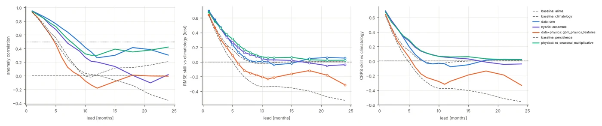

Climate prediction has a comparison problem: every paper uses a metric, a window and a baseline of its own. The experiment levels all of that, puts 28 models from five families on the same yardstick and publishes the whole ranking, uncomfortable positions included.
The protocol
The data is OISST v2.1, with every source file kept under its SHA-256, plus thermocline casts and ERA5 stress. Every model is scored on the same validation window, with anomaly correlation, RMSE skill against persistence and against climatology, and a significance test with Holm correction. Probabilistic models also carry CRPS, 95% coverage and PIT deviation.
The result that matters
At 24 months, the seasonal recharge oscillator, a physical model with 15 parameters, reaches 0.42 anomaly correlation, against 0.33 for AR and 0.34 for the plain recharge oscillator. At 6 months it sits at 0.63 against 0.43 for AR. Climatology, by definition, sits at zero.
Only two models beat the best baseline at each horizon with statistical significance, and only early: the CNN, with 561 thousand parameters, at lead 1, and the hybrid ensemble at leads 1, 2 and 3. Beyond that band, the difference disappears into the noise.

What lost, and is published
The PINNs did not come out better for being PINNs. The PINN built on top of the recharge oscillator itself (6 parameters, 91 s to fit) scores −0.69 correlation at lead 3, while the oscillator it inherits its physics from, with the same 6 parameters, sits at 0.80. The version with a learned closure collapses too: −0.71 at the same lead.
The physics-loss model (0.51 at lead 6) and the extrapolation PINN (0.54) land mid-table, ahead of persistence and behind the physical oscillator. That is the kind of result that only shows up when the comparison is made on the same yardstick.

Physics before the model
Before comparing models, the solver was compared with the analytical solution: the Kelvin wave travels at 2.689 m/s against 2.7 m/s from theory, the steady Gill response converges to the analytical solution with an L2 error of 1.5×10⁻³ at 72 longitude points and 5×10⁻⁵ at 576, and the recharge-oscillator period matches theory at all five resolutions tested.
How to read the ranking
The ranking does not crown the most modern model. It shows where cheap physics wins, where a large network only draws, and where the expensive method makes things worse, which is what lets the choice be made with a budget instead of with enthusiasm.